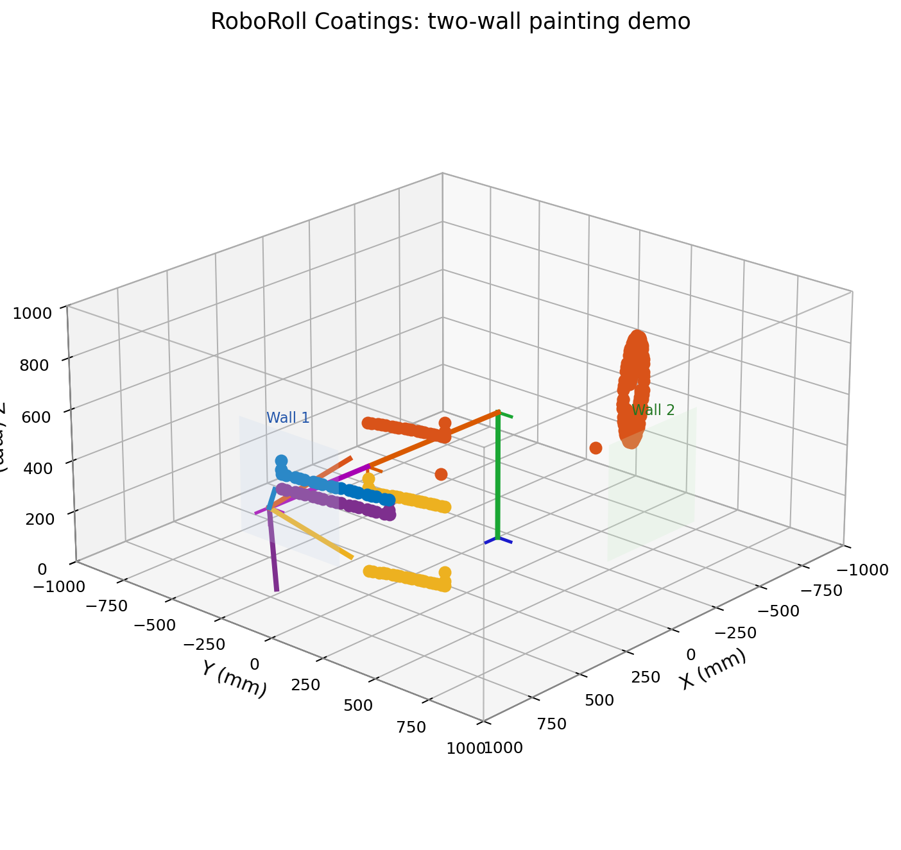
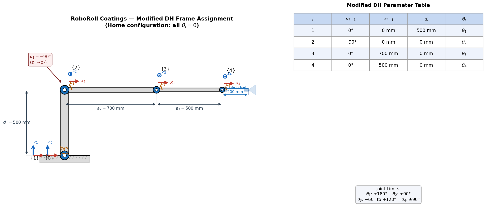
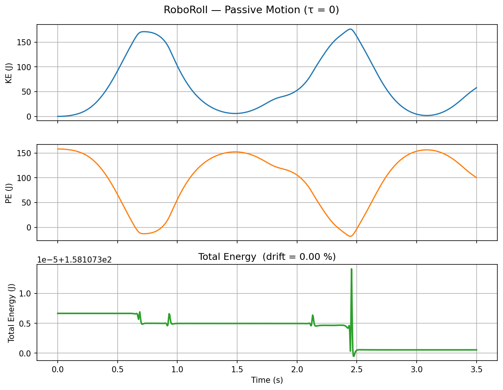
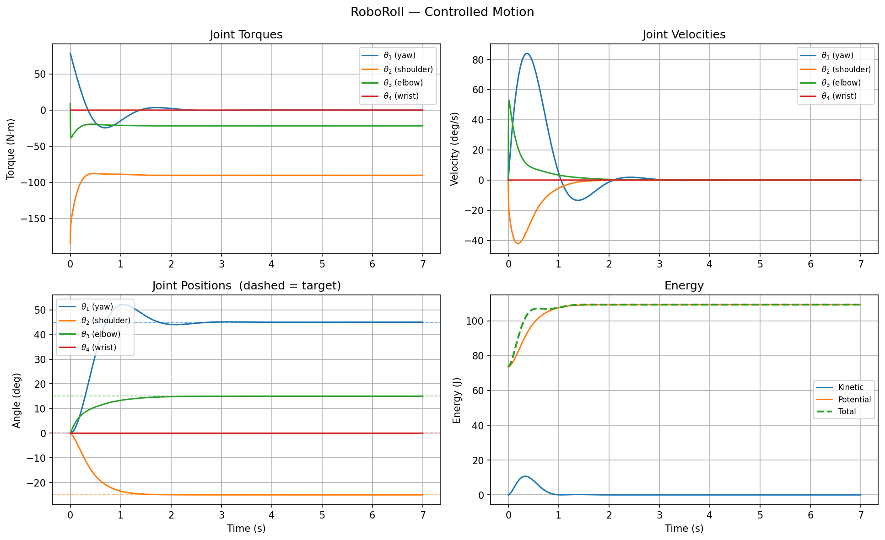

Startup pitch
RoboRoll Coatings
Robotic wall painting for faster, safer, more repeatable interior finishing.
Startup pitch
Robotic wall painting for faster, safer, more repeatable interior finishing.
1. The problem

2. Why it matters
3. The solution

4. Product demo
5. Why we win
Thank you
Robotic painting for the next generation of construction crews.
Additional materials
The following slides provide the fuller technical, market, and roadmap story.
A1. Beachhead market
A2. Customer workflow
A3. Robot architecture
A4. Kinematics proof
A5. Demo path details
A6. Dynamics proof


A7. Development roadmap
A8. Risks and mitigations
A9. Funding use
A10. Closing story
RoboRoll begins with repeatable interior painting, proves value in controlled room-scale tasks, and expands toward broader finishing automation.